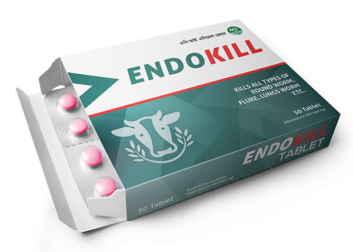

Composition
Each bolus contains:
Albendazole USP 600 mg
Indications
Hepatic Fascioliasis, Tap worm infestation, Ascariasis, Lung worm infestation in cattle, Esophagostomiasis, Tricostrongyliasis, Haemonchosis, Trichuriasis, Kidney worm infeststion etc.
Dosage and administration
For All Animal: 8-10 mg/ Kg body weight Or 1 Bolus for 60-75 kg Body weight
Side Effect
No Side effect, It may be used in pregnant animals after 2 months of conception
Storage
Store in a cool & Dry place. Away from direct Sunlight.
Keep out of all Medicine reach of Children.
Presentation
8x5’s (40 tablet in a box.